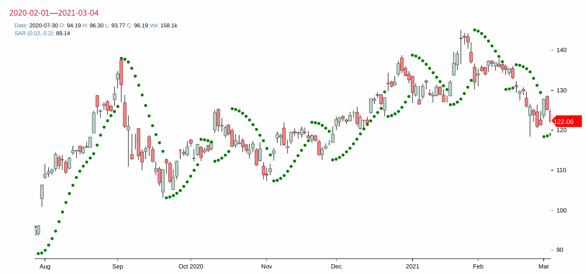
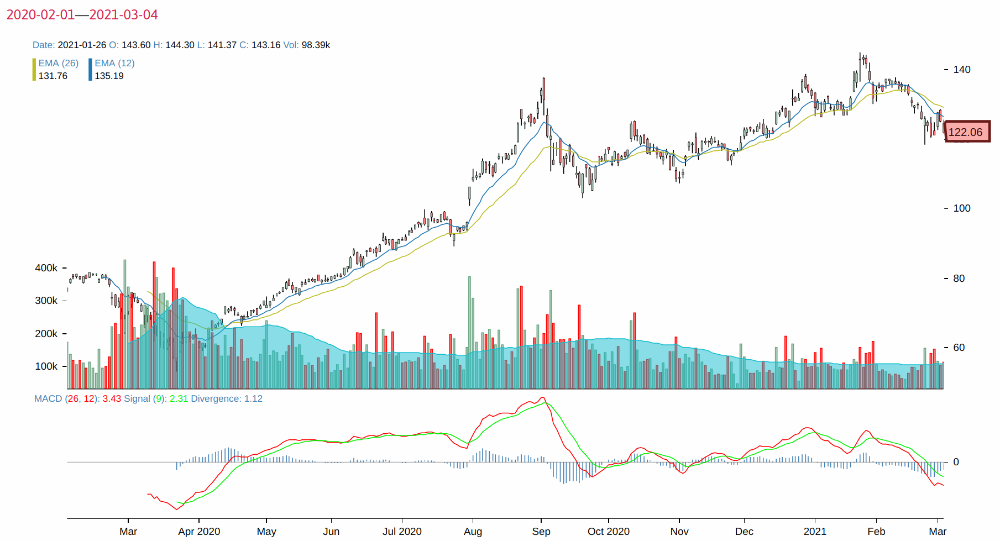
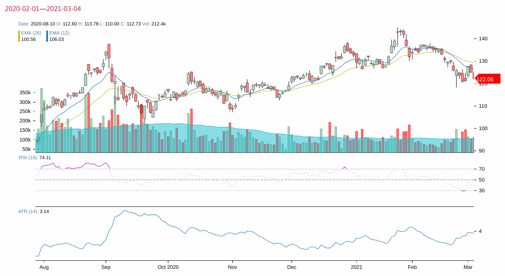

Continue from last article. That one focused on value assessment. This will go over trend analysis.
Select a period & price

Unlike other websites where you usually have choice of 1d, 5d, 1m, 3m, and 6m as time range, this tool can select any date-to-date as you wish, and all following analysis will be done over this selected range.
Daily return %
Daily return is defined as (close-open)/close of that day. This
value is pre-computed as a strategy value.

Overnight return %
Overnight return is defined as (today's open - yesterday's
close)/yesterday's close. This is also a pre-computed strategy value.

I noticed that there is always some after market news or earning
calls that will sway the market. Further, apparently trading is going on after the market is closed to me! Therefore, there is a dark period when the price is moving, but I can not participate until the next morning. Using this value together with daily return, I'm hoping to gain sense how likely an up seen overnight will translate to an up during day.
My indicators
This is really what got me to begin with — the analysis edge I was hoping to achieve. I think this is the same drive that you have in mind. If so, read on.

-
end-to-end return %: if I buy at the firstopenprice, and hold it till the lastcloseprice, how much do you gain? I also call thisrange return. One can easily picture that any buy-sell pair can be viewed as a range return. Of course, in reality, buying at open price and sell at close price is not possible, at least not for me. So whatever the return is, it's an ideal situation. -
compounded return %: this is to emulate a busy day trader who, instead of holding through the range, buy at eachopenand sell at eachclose, thus riding the daily wave. Since there are ups and downs, what is the compounded return then?In most cases I looked at, compounded return is always < range return. Therefore, riding wave is not a good idea, even when transaction fee is 0.
-
close price RSD %: RSD, relative standard deviation, is to measure how much swing close price is seen in this time period. The larger the value, the more volatile it appeared.
One catch, however, is that when computed over a longer time period, because prices is ever going up, for example, this value will naturally become larger. Therefore, it's more useful if you compare stock A vs. B over the same period, not to a single stock itself.
-
overnight flip/consistency: I'm curious how likely an overnight trend carries over to the next day1. Numbers are day count. -
overnight flip returns up %/down %: This is one step further on observing an overnight trend against its next day. In a flip, there could be a large up, then a small down, and vice versa. Therefore, by computing the compounded return of overnight and today, we can see how many flips resulted in a positive return. Up and down % adds up to 100%.
In the example above, among overnight flips, 46% would have resulted in a positive return, but 56% in the negative. Therefore, in this case down flips were not compensated enough by the next day ups, meaning the sentiment, though flipped a bit, was still carrying the day.
-
two-day trend up/down/flip: Taking two consecutive days, how many are both ups, downs, or reversed. Since human is naturally looking at yesterday's trend feeling it will be duplicated today2, knowing how likely today's positive will flip is at least a useful probability measure. -
daily return up %/down %: Easy. Take each day's return, what's the odds you would have made money if riding that day? In the example above, 50/50, indeed a random walk down the Wall Street. -
nightly return up %/down %: Counting overnight returns, how likely it would have gone up or down. Using this probability, one may bet the overnight. One reason is that overnight is off limit to investor. We simply don't have access or control over this period, but the market doesn't sleep. Further, I noticed that some companies make earning calls deliberately after market is closed. Therefore, this is really a period of uncertainty by design of the system. -
up daily return avg/RSD %: Curious how much a daily up we saw in term of average and its RSD. Taking this together w/down daily return avg/RSD %, I'm hoping to shed light whether upside is better than the downside.In the example, upside avg was 1.91% while downside was 2.11%. Therefore, downside dominated, in average. Up's RSD was less than down's, so that we saw larger scale of swing when there was a down day than one of an up day. So overall, I would take this period as a down period and would expect to lose since the odds were not in up's favor.
Tech indicators
I didn't invent any of these. Found this react library, and am using it to plot these fancies. One downside of this approach is that I don't have computed numbers such as SMAs. So later I might re-implement these values so to make more sense of them.
One observation is that all of them are doing some kind of SMA, which is essentially a smoothing technique. I have commented in previous article that this is a double edge sword as it can generate so called a pattern for pattern's sake.
Further, these charts are clearly against philosophy that stock history is not a reliable indicator of the future. Therefore, I have them here because of their popularity mostly.
Bollinger Band
Read the wiki. It's interesting.

Elder Ray
See intro.

SAR
See wiki.

Full Stochastics Oscillator
See wiki.

Heikin-Ashi
Read here.

MACD
See wiki.

Relative Strength (RSI)
See intro.

-
In theory, you can profit off any probability that is greater than 50. Therefore, if there is a discrepancy between consistency and flip, you should be able to bet the next day using this probability. This same thought goes to other flip/consistency measures. ↩
-
Even though it is a cliche that history does not predict the future, in stock's case, it is difficult for layman investor such as myself to think otherwise. Yesterday's trend is the closest information we have got. ↩
— by Feng Xia